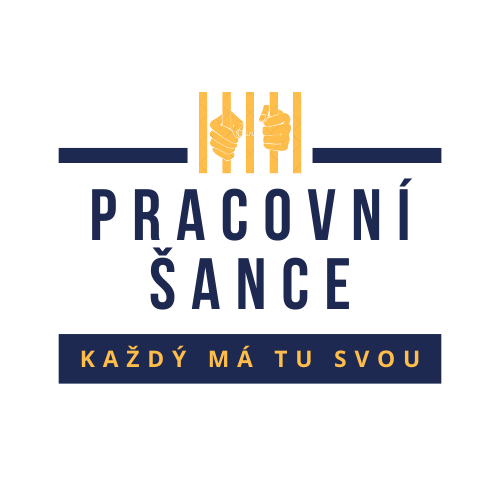

Pracovní šance Každý má tu svou.
Projekt "Pracovní šance" vzniká ve spolupráci s neziskovými organizacemi, firmami, sociálními pracovníky a kurátory. Cílem našeho projektu je vytvořit pracovní server, kde budou lidé po výkonu trestu nebo lidé z předčasného propuštění, hledat práci ve firmách, které jsou zaměstnávání lidí po výkonu trestu naklonění.
Hledání práce po výkonu trestu je specifické a je spojeno se zklamáním z neúspěchů při hledání a zároveň je nezbytné pro úspěšný návrat do "normálního života". Nalezení práce zároveň umožňuje řešit své závazky a splácet dluhy.
Chceme připravit prostředí, kde se budou tyhle dvě skupiny propojovat.